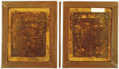

Babrius, Fabels. Grieks. Zeven plankjes, groot circa 145 x 115 mm en circa 6 mm dik, aan beide zijden verdiept voor een schrijfvlak van 120 x 90/95 mm en met zwarte was bestreken, met uitzondering van het eerste, dat alleen aan de keerzijde is bewerkt. In de linkerrand tweemaal twee gaten om de tabletten te bundelen. Palmyra, 273 of vroeger. -- (BPG 109)
Met was bestreken tafeltjes werden beschreven met een ‘stilus’, een metalen griffel, die aan de bovenzijde breed eindigde om het geschrevene ermee te kunnen uitwissen. Het met was bestreken vlak werd op een verdieping in het hout aangebracht om beschadiging van het schrijfoppervlak te voorkomen.
Naast tafeltjes met aantekeningen van zakelijke aard zijn vooral uit de Romeinse tijd
nogal wat exemplaren opgegraven die gebruikt zijn voor schooloefeningen. Zo ook deze. Zij
werden gevonden bij het oude Palmyra, dat in 273 werd verwoest.
De fabels van Babrius, een dichter uit de tweede of eerste eeuw v.Chr. van wiens leven
vrijwel niets bekend is, behoorden, zo blijkt uit deze tafeltjes, indertijd tot de
schoollectuur. Want allerlei fouten in de tekst verraden dat ze geschreven zijn door een
schooljongen, die vermoedelijk naar het dictaat van zijn leermeester werkte.
Literatuur
- A. de Meyïer [et] E. Hulshoff Pol, Codices Bibliothecae Publicae Graeci. Lugduni Batavorum 1965 ( = Bibliotheca Universitatis Leidensis. Codices manuscripti. VIII).
- Babrius, Mythiambi Aesopei. Ed. M.J. Luzzatto et A. La Penna. Leipzig 1986 ( = Bibliotheca scriptorum Graecorum et Romanorum Teubneriana), p. xxx-xxxi.
- Vergelijk: B. Bischoff, Paläographie des römischen Altertums und des abendländischen Mittelalters. 2te, überarb. Aufl. Berlin 1986 (= Grundlagen der Germanistik. 24), p. 28-30.
- Vergelijk nummer 5.
| vorige pagina | top pagina |